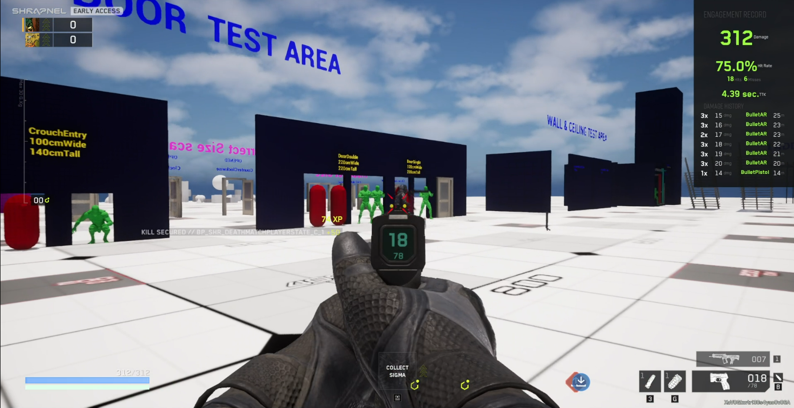
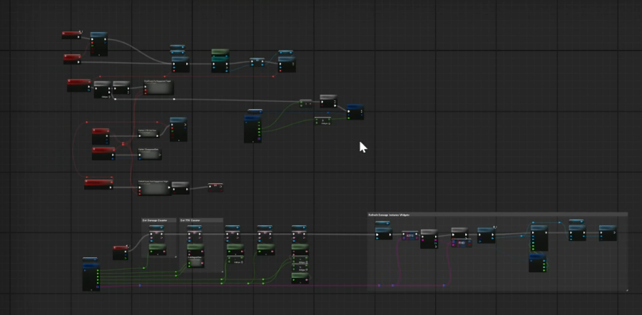
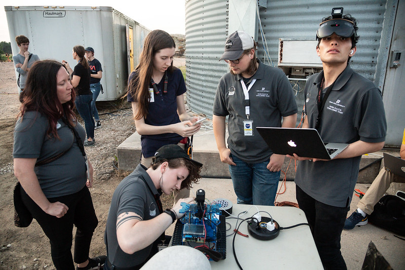
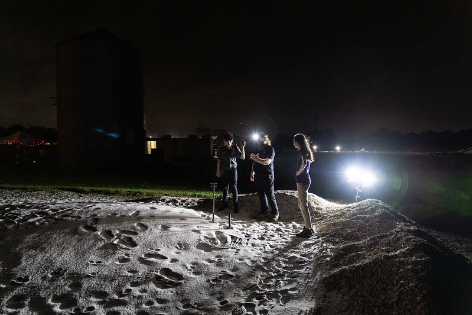
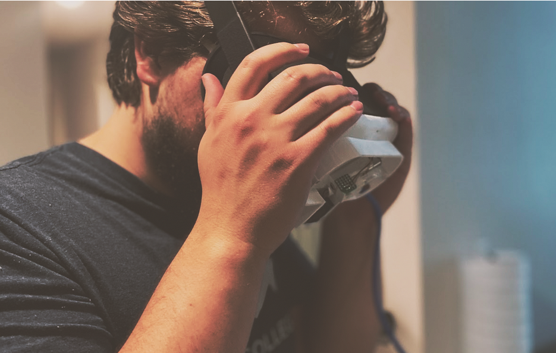

Unreal EngineBlueprintsUI / UXLive Service QAData Visualization
TL;DR: Built a UE5 Widget Blueprint that sped up feature validation, regression, and tuning validation of 90+ operator perks for Shrapnel's Early Access launch. Conservative estimate of 360 QA hours saved by eliminated the need to scrub test footage for relevant metrics.

Engagement Record Running in a Controlled Test Area
Shrapnel's character progression system was shipping with 90+ perks, and every one of them
needed combat balance validation before release. The way QA was doing it was slow: run a
session, capture footage, scrub back and forth, take notes on TTK, accuracy, and damage
output, then try to piece together a writeup. Roughly 4 hours of work per perk. Nobody
had a tool that could just show you what was happening while it happened.
So I built one. A UMG widget that sat on top of live gameplay and surfaced the metrics
QA actually needed in real time: time-to-kill, hit accuracy, and detailed damage data,
scoped to whatever test dummies or opponents were in the session. The screenshot above
shows it running in a controlled test area -- stats update live, no scrubbing, no post
session cleanup.
Under the hood, the capture layer was pure Blueprints,
so weapon fire, damage, and kill events could broadcast into the tracker without touching
the underlying gameplay code. That kept the tool non-invasive and easy to drop into any
build without entangling it with the rest of the project.

Top-Level View of the Tracker's Blueprint Project
Once the tool was in rotation, initial per-perk validation dropped from ~4 hours to
roughly the length of a focused test session. And that 4-hour figure is just the first
pass -- regressions and failed-fix cycles easily doubled it in practice, which makes the
~360 hours saved a conservative floor rather than a ceiling. QA could validate balance
inside the loop instead of after the fact, and design got faster feedback on how tuning
changes actually landed in-game.
Unreal Engine 5Pipeline State ObjectsPowerShellPerformance ProfilingTechnical WritingTeam Coordination
Shrapnel was shipping with noticeable hitches caused by Pipeline State Object (PSO) cache
misses — the GPU stalling while it compiled shaders on the fly. Nobody had dug into it
yet, so I took the problem end-to-end: research, implementation, validation, and
presenting the case to leadership.
I started by researching the problem through Unreal documentation and community resources,
then coordinated the QA team to gather quantitative performance data on the hitches and
collect pipeline cache files from test sessions — a process they weren't familiar with,
so I walked them through it. I also coached team members on using Unreal Insights for
performance profiling, so they could independently capture traces and validate results
without needing engineering support.
From there, I wrote a PowerShell script to expand the collected pipeline cache files into
a stable shader cache. The documented commands didn't work for our project as-is — UE5's
PSO tooling is poorly documented, and I had to dig into it to find the correct parameters
for our specific setup. I packaged the expanded cache into a build, had QA re-validate
performance, and analyzed the before/after data.
The result: 41% fewer cache misses, 64% lower cost per miss. I wrote up the full analysis
— root causes, tradeoffs between different mitigation strategies vs. ignoring the problem
— and presented it to leadership so they could make an informed decision on how to
proceed.
Shader CompilationGPU PerformanceRoot Cause AnalysisUnreal InsightsDocumentation
Death Heatmap Visualizer
Senior Test Engineer | Lionbridge Games
PythonPlotly / DashData VisualizationGame Design Support
NDA-Compliant Visualizer Tool
What can I say about Akiah? Singularly impressive doesn't even begin to cover it.
Akiah started as a tester on my team, but it didn't take long for them to prove that...
show more
What can I say about Akiah? Singularly impressive doesn't even begin to cover it. Akiah
started as a tester on my team, but it didn't take long for them to prove that their
skills and leadership extended far beyond that role.
Their ability to analyze systems, collaborate cross-discipline, and drive meaningful
improvements quickly led to a well-earned promotion as an embedded Senior Tester in the
studio. Once embedded, Akiah didn't just meet expectations, they redefined them. They
took on additional responsibilities, demonstrated solid coding skills, and created a QA
tool that became invaluable to Game Design. This tool leveraged backend playtest data to
generate an overlay onto the current game level visualizing every player death: where it
occurred, where the fatal shot originated, and the method of death. By providing clear
insights into engagement zones, chokepoints, and level flow, Akiah's work gave designers
insightful data to help them refine maps and optimize gameplay.
Beyond technical expertise, Akiah has the ability to bridge gaps between teams, QA,
Engineering, UI, and Game Design; ensuring that testing isn't just about finding bugs
but about elevating the entire game. Any team would be lucky to have them.
I built this tool in Python using Plotly and Dash to help the design team understand what
was actually happening in their levels. It overlaid 10,000+ gameplay events onto level
geometry with full filtering — you could see where every player death occurred, where the
fatal shot came from, and the method of death. Designers used it to identify chokepoints,
dead zones, and engagement flow issues that weren't obvious from playtesting alone.
The company-specific data has been scrubbed, but I was given permission to show the
anonymized version above ☺️
This project came out of my time embedded as an STE at NeonMachine, working on Shrapnel.
I'd started at Lionbridge as a Game Test Associate — top bug reporter on a 20+ person
team, 356 confirmed defects — and earned a promotion to Senior Test Engineer within 8
months. Once embedded at the studio, I took on everything from CI/CD pipeline management
(Jenkins, Perforce, server launches) to authoring 130+ test suites and 107 pages of
documentation. I also supported 3 live service releases and coordinated up to 20 testers
during structured test passes.
After supporting three live releases, the team was restructured. I was given the option to
move back to Idaho, but I'd grown to like Seattle too much for that 😁
Radar Minimap UI Prototype (displayed with NeonMachine's permission)
I built this as a prototype to test an alternative approach for enemy detection and
objective signaling in Shrapnel. The existing system worked, but I thought a radar-style
minimap could give players faster spatial awareness without cluttering the main viewport.
I wrote a design proposal, got the go-ahead, and built the prototype in Unreal Blueprints.
The UI in the screenshot is a bit busy because it's running alongside the legacy system
for comparison — but it shows the radar in action with enemy positions, objective markers,
and directional indicators all feeding through the minimap.
The source files (blueprints, curves, structs, and materials) are available on GitHub.
The proprietary gameplay code it references has been stripped out, but the radar system
itself is all there.
TL;DR:Three years on NASA's SUITS Challenge
building AR tools for future lunar EVA. Built a hands-free spatial navigation system
(Beacons + Minimap) in Unity/C#/MRTK for HoloLens 2 and Quest 2, then took over as Team
Lead -- grew the team from 6 to 15 through COVID, co-authored 4 research papers, wrote a
30-page proposal accepted by NASA, and demoed ARSIS 5.0 at Johnson Space Center.

Preparation for Live Testing at JSC
Akiah is an incredible programmer, designer and developer. I had the opportunity to work
with them for multiple years during their time as a student at Boise State...
show more
Akiah is an incredible programmer, designer and developer. I had the opportunity to
work with them for multiple years during their time as a student at Boise State
University. Akiah has strong leadership skills and did a wonderful job working as a
team lead for the Boise State University NASA SUITS team. The NASA SUITS challenge
asks students from multiple universities to build an extended reality application to
aid in research toward future spacesuit technologies used on the international space
station, moon and Mars. Akiah managed a large team of students and tested the team's
application in Houston in Spring 2022. Akiah is a strong learner, a team player and
an all around wonderful person to work with. Any company would be lucky to work with
Akiah.
NASA's SUITS Challenge asks university teams to prototype AR systems for the kinds of
problems astronauts will hit on future lunar EVAs: GPS-less navigation, hands-free
procedures, comms under stress, and lighting conditions that break most off-the-shelf
tech. I spent three years on Boise State's entry, ARSIS (Augmented Reality Space
Informatics System), across versions 4.0 and 5.0 -- year one as an XR developer, years
two and three as team lead. The project ran on Unity, C#, and MRTK, targeting HoloLens 2
and Quest 2. We tested in conditions that broke everything: high-reflectivity sand dunes,
volcanic rock, caves with no natural lighting, and low-connectivity environments.
AR Navigation -- Beacons & Minimap
My first year focused on ARSIS's spatial navigation. A lot of game-style UI patterns
had never been stress-tested in AR for hands-free HMD use, especially in scenarios
where landmarks don't exist, GPS doesn't work, and the user is wearing pressure-suit
gloves. The work ended up being equal parts engineering and research.
I built two systems in Unity with C# and MRTK that were designed to work together: a
'Beacons' system that surfaced mission-critical points of interest with heading and
distance visible through terrain and obstacles, and a 'Minimap' -- a hands-free
top-down view anchored to the user's position, showing the surrounding beacons in
spatial context. Together they let test subjects acquire a target from a distance
and navigate to it under the kind of conditions where every other spatial cue falls
apart. We presented the system to NASA Artemis mission control over Zoom that cycle.
After my first year I stepped into the Team Lead role just as COVID hit. Student
research participation was collapsing across programs, and if the team couldn't hold
together the project would stop. I ran targeted outreach through the lockdown and
grew the team from 6 to 15 members, restructured the work around an Agile cycle so
distributed contributors could stay aligned with NASA's challenge requirements, and
wrote the majority of a 30-page technical proposal that was accepted by NASA and
helped secure funding from the Idaho Space Grant Consortium.
We co-published 4 research papers across HCI International and SpaceCHI/MIT Media Lab,
and presented and demonstrated ARSIS 5.0 at Johnson Space Center. We discovered a lot
more "it doesn't work"s than "it works"s -- but hey, that's research!

Live Testing at JSCRecognition at Johnson Space Center
The SUITS Challenge team is still operational today -- something I'm quietly proud of,
given that keeping a student research group alive through COVID was its own kind of
engineering challenge. I remember the MRTK 2 to 3 migration throwing us into disarray,
and figuring out Git LFS for binary assets being its own adventure 😆
Research Developer | Boise State University (Paid Research)
UnityC#ArduinoHardware IntegrationVR Research

VARScent was a paid research project at Boise State, summer 2020, exploring
scent-based VR therapies as a potential aid in Alzheimer's research. I was the
sole developer on a short-term contract, building the software and hardware
bridge that let a Unity scene trigger real-world scent distribution.
I wrote Arduino firmware (C/C++) to drive a proprietary micropump assembly for
dispensing scents, then used the Ardity plugin in Unity (C#) to open a serial
connection between the runtime and the hardware. In-world triggers and hitboxes
fired scent events in real time. I built a small test level in Unity to
demonstrate the full pipeline end-to-end, plus a diagnostic test sequence in
Arduino that the research team could use to validate hardware state independently
of the Unity side.
I also surveyed other teams' approaches to smell-in-VR and reported findings to
the supervising professors to inform the broader research direction.
Because it was a single-summer stint, I spent the final weeks documenting the
architecture, hardware interface, and diagnostic procedure so the regular
student research team could continue development after I left. The frameworks
I built remained the foundation for their subsequent work.